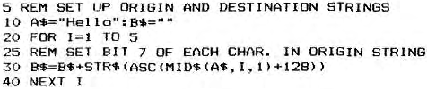

Micropower |
Volume 2 · Number 3 · July 1982 |
| Page 29 of 37 |
|---|
Facilities 0, 2 and 3 are self-evident but the Reverse Alphanumerics requires some explanation. The graphics bit, Bit 7, is re-routed to provide the reverse signal, so that Graphics and Reverse Alphanumerics cannot be on the screen at the same time. The difference between ASCII “A” (41) and ASCII reverse “A” is 80 so that with Bit 1 of the Port low, C1 will give reverse “A”.
Programming in machine code is simple, as all that is required is the addition of 80 to the ASCII code for a letter or number. This can be done using the comma before a letter in the Modify mode and then pressing the Graphics key with the letter if you have the modified keyboard described in Micropower, Volume 1, Number 2. (A superb modification. The most difficult part being the cutting out of the keyboard case for the extra keys. Also, if you, like me, do things and then think about them, please note that it is the zero key and not the O key that is modified.)
Programming the Reverse Alphanumerics in BASIC is simple if you have the Graphics key but some string manipulation is required if you haven’t, in order to set Bit 7. The following is a suggestion but could, I am sure, be improved.

The Reverse Alphanumerics work regardless of the screen background, so that black letter on a white background are produced if the screen background is black and vice versa. One thing that I should mention about RA is that the top of each character is on the top row of the line so that if, for instance, “E” is in RA below a normal line, then the top bar will tend to merge with the line above. However, this a very cheap modification and some snags can be expected. For perfectionists, a similar commercial product is available costing, I believe, about £40.
“Not another Othello”, I hear you say. Yes, it is, but this is a very nice version, written in machine code for Nas-sys, it executes at 1000H and has a nice feature called “Hint” which you get by pressing the Space Bar on your move. Beware though, it plays a mean game.
| Page 29 of 37 |
|---|